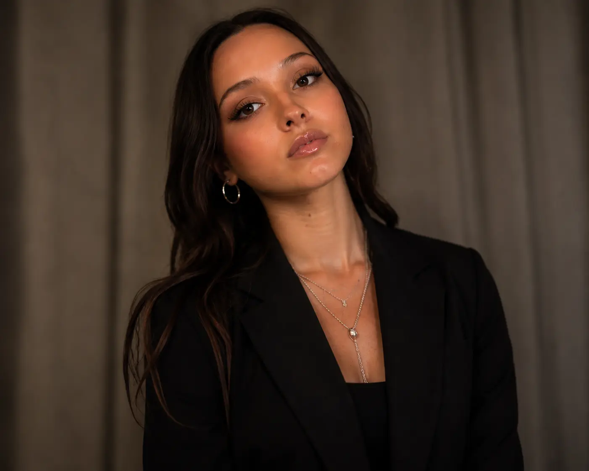

Television · Long-form
6 Days Stranded on an Island
- Production
- Survival Games TV
- Role
- Video Editor
Aly worked as a video editor on this television production, helping shape raw footage into a complete long-form episode.
Watch the full episodeSan Diego · Video Editor
Finding the story inside the footage.
I shape raw footage into clear, memorable stories for television, branded content, social media, and digital audiences.
Editing in motion. Professional credit featured below.
Editing approach
I have been editing since I was 13. Years of working through raw footage taught me to look for the moment that gives a story its pulse.
I call it finding the gold: the reaction, pause, image, or line that makes the message land. From there, I build the pacing, structure, sound, text, and transitions around what matters most.
Every frame should help the story move, feel, or stay with the viewer.
Featured work
A long-form production that required close attention to story, pacing, selects, and continuity.
Television · Long-form
Aly worked as a video editor on this television production, helping shape raw footage into a complete long-form episode.
Watch the full episodeExperience
Professional editing experience supported by years of dependable, high-pressure customer-facing work.
Edited short-form and branded content for digital and social media.
Delivers attentive service in a fast-paced team environment while balancing accuracy, communication, and changing priorities.
Capabilities
Practical post-production support for teams that need strong instincts, organized footage, and dependable follow-through.
Reviews raw footage, identifies the strongest moments, and builds a clear narrative around them.
Refines rhythm, transitions, music, text, and visual details so the edit feels intentional.
Shapes short-form content for vertical and horizontal delivery across digital platforms.
Responds to creative direction, keeps projects organized, and carries edits through final export.
Toolkit
Comfortable learning new systems and adapting to the process a production team already uses.

San Diego, California
About Aly
I am a San Diego-based video editor with hands-on experience in television, branded content, and social media. Editing has been part of my life since I was 13, and I still love the process of turning a large amount of footage into one focused experience.
I am dependable, easy to communicate with, and ready to keep growing inside a production team. I care about the small choices that make an edit feel natural, powerful, and memorable.
Available for production agencies, YouTube creators, digital media teams, local brands, and select freelance work.
What I bring
Notices the reactions and details that give footage emotional weight.
Takes direction well, asks useful questions, and keeps improving with every project.
Stays organized, communicates clearly, and follows work through to delivery.
Open to opportunities
Aly is seeking entry-level and assistant editor roles where she can contribute immediately, learn from experienced editors, and build strong work with a collaborative team.
Freelance
Aly is also available for select projects with clear footage, creative direction, and delivery goals.
Start a conversationContact
Share the role, project, timeline, and what you need from an editor. Aly will reply by email.